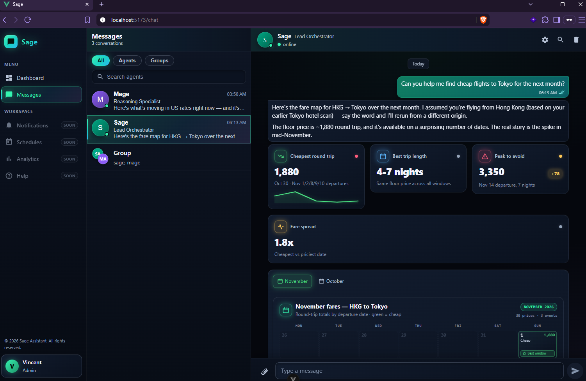

Multi-agent orchestration
Agent teams with clear roles, tool boundaries, and hand-offs. Built with LangGraph, Bedrock AgentCore, and custom orchestration loops.
LangGraphAgentCoreMCP
I'm Vincent Ko. I build production agent systems, RAG pipelines, and detection automation — then measure whether they actually behave.
Practical pentesting & security fundamentals - increasingly relevant as agents are badly instructed to do hacking.
Where agentic AI meets security engineering: automated detection, multi-agent orchestration, retrieval, tool wiring, and evaluation.
Agent teams with clear roles, tool boundaries, and hand-offs. Built with LangGraph, Bedrock AgentCore, and custom orchestration loops.
Detection-as-code workflows: Sumo Logic CSE rules, MITRE ATT&CK gap analysis, log-source wiring, alert triage, and noise reduction.
Tracing, task-outcome and behavior evaluation, fallback-policy testing, and tighter agent loops without quality loss.
MCP server implementation, third-party MCP tool wiring and access controls, plus FastAPI/NestJS services, RAG, queues, and AWS infrastructure.
A personal multi-agent assistant built for my own workflows. It plans, delegates, calls tools, and streams results through a web UI — and it powers the chat on this page.
SAGE is a multi-agent assistant I designed and built from scratch: a lead orchestrator decomposes a goal, routes work to specialist agents like Mage, and combines their output.
It runs the small websocket bot behind the chat bubble here, so visitors can ask it about my experience. Under the hood: orchestration, tool/MCP wiring, evaluation, and failure handling.

Two chapters at Crypto.com: first building large-scale blockchain security software, now bringing multi-agent automation into the Detection Engineering department.
AI Engineer + Security Engineer in the Detection Engineering team, automating detection workflows.
Blockchain monitoring and multi-agent security review. Cut blockchain project development time from 2–3 weeks to 1 week.
Production systems and personal builds. Company work is described publicly; personal projects are open where possible. 30+ open-source projects on GitHub.
A personal multi-agent assistant with a lead orchestrator, specialist agents, tool/MCP wiring, and a streaming web UI. It also powers the chat on this page.
Autonomous code review with LangChain and RAG, backed by a producer-consumer queue. Caught 100+ critical vulnerabilities and was well-received by developers and software VPs.
Transaction monitoring microservices for 1.2M+ users. Achieved a 7x execution-speed increase through multi-threading and data-structure optimizations.
Multi-agent workflows for Detection Engineering: detection-as-code, Sumo Logic CSE rules, MITRE ATT&CK gap analysis, and noise reduction.
Full-stack Japanese learning webapp with dictionary and flashcards. Java Spring, ElasticSearch, VueJS.
Java web server built from scratch with HTTP/2 and WebSockets.
Java Socks5 and SMTP clients built from scratch to understand the protocols at socket level.
Open to conversations about agentic AI, detection engineering, backend scaling, or the evaluation work that makes AI systems trustworthy.